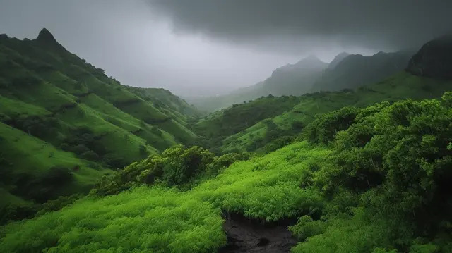
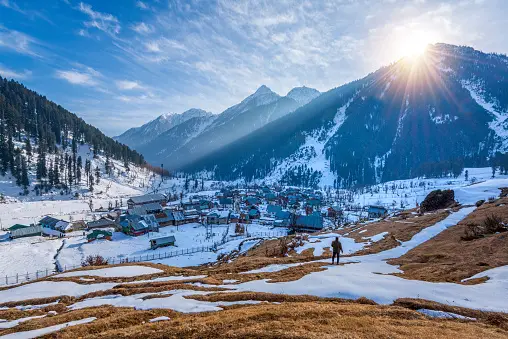
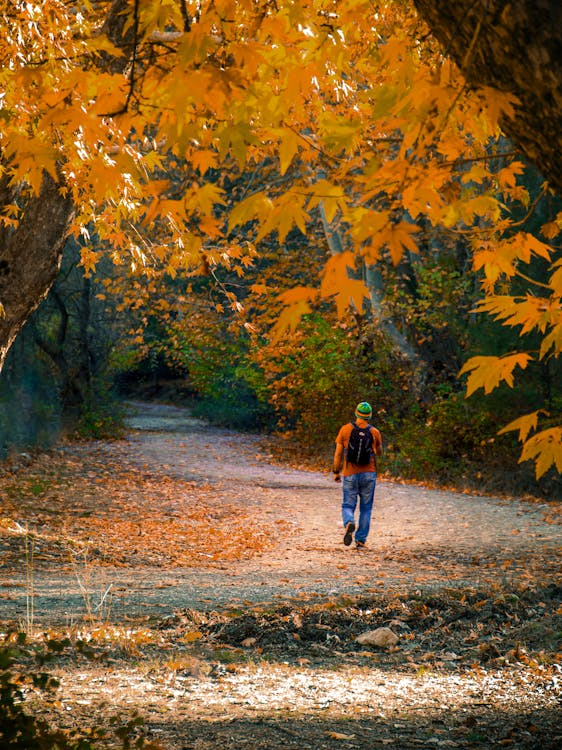

Climate Overview

Summer
(June – September)
Summer in Meghalaya is cool and pleasant with comfortable temperatures. The weather is perfect for sightseeing, trekking, and outdoor activities. Green hills, clear rivers, and waterfalls make the landscape beautiful.

Monsoon
(April – May)
Monsoon brings heavy rainfall and turns Meghalaya into a green paradise. Waterfalls like those in Cherrapunji flow at their fullest. Travel can be challenging, but the scenery is breathtaking and magical. Offers stunning landscapes.

Winter
(October – February)
Winter is cool, misty, and one of the best times to visit Meghalaya. Clear skies and pleasant weather make it ideal for sightseeing and photography. The season is perfect for exploring nature, culture, and local festivals.

Autumn
(October – November)
Autumn in Meghalaya is a short and pleasant season after the monsoon. The weather becomes clear, fresh, and ideal for travel and sightseeing. It’s a peaceful time to enjoy green landscapes and cool breezes before winter.